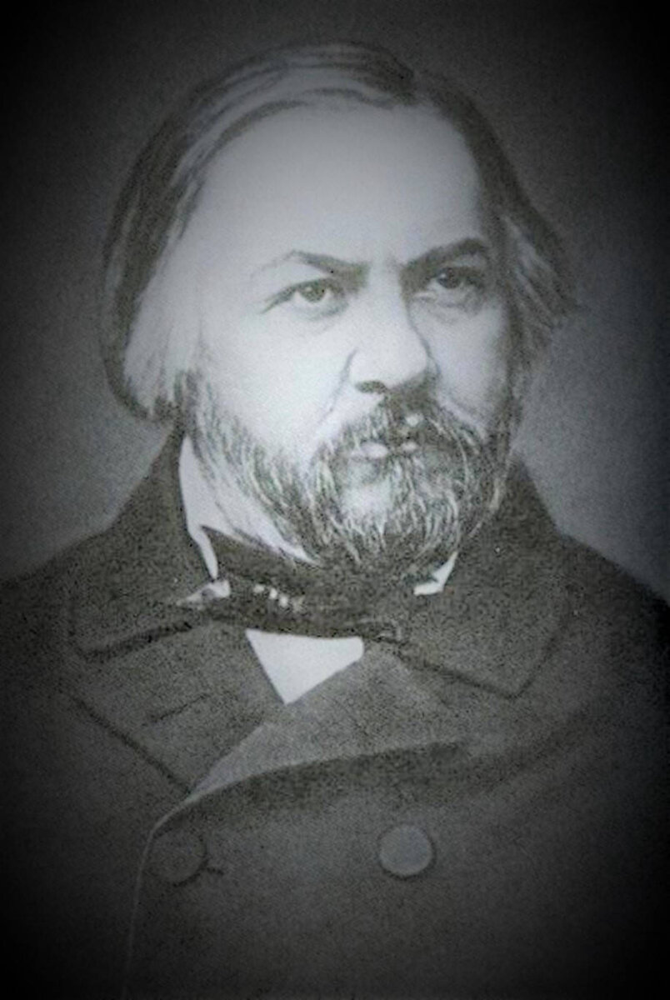

music На главную Выход  Михаил Иванович Глинка Симфонические произведения Романсы Оперы Симфонические произведения Слушайте <a href='https://music.yandex.ru/album/9526347/track/31600263'>Испанская увертюра No. 1, Арагонская хота</a> — <a href='https://music.yandex.ru/artist/306177'>Евгений Светланов</a> на Яндекс Музыке Слушайте <a href='https://music.yandex.ru/album/9526347/track/31600264'>Испанская увертюра No. 2, Воспоминания о летней ночи в Мадриде</a> — <a href='https://music.yandex.ru/artist/306177'>Евгений Светланов</a> на Яндекс Музыке Слушайте <a href='https://music.yandex.ru/album/9526347/track/61195832'>«Камаринская», фантазия для оркестра на темы двух русских песен — свадебной и плясовой</a> — <a href='https://music.yandex.ru/artist/306177'>Евгений Светланов</a> на Яндекс Музыке Наверх Романсы Слушайте <a href='https://music.yandex.ru/album/9528853/track/33265766'>Не искушай меня без нужды</a> — <a href='https://music.yandex.ru/artist/8545064'>Александр Ведерников (Ст.)</a> на Яндекс Музыке Слушайте <a href='https://music.yandex.ru/album/9528853/track/33265773'>Я помню чудное мгновенье</a> — <a href='https://music.yandex.ru/artist/8545064'>Александр Ведерников (Ст.)</a> на Яндекс Музыке Слушайте <a href='https://music.yandex.ru/album/9528853/track/33265778'>Не говори, что сердцу больно</a> — <a href='https://music.yandex.ru/artist/8545064'>Александр Ведерников (Ст.)</a> на Яндекс Музыке Наверх Оперы Слушайте <a href='https://music.yandex.ru/album/1593676/track/14582814'>Ruslan and Ludmila, Opera: "Overture"</a> — <a href='https://music.yandex.ru/artist/18581'>Михаил Иванович Глинка</a> на Яндекс Музыке Слушайте <a href='https://music.yandex.ru/album/2800324/track/24102659'>Иван Сусанин: Эпилог. Антракт и хор "Славься"</a> — <a href='https://music.yandex.ru/artist/3785327'>Симфонический оркестр Государственного академического Большого театра СССР</a> на Яндекс Музыке Слушайте <a href='https://music.yandex.ru/album/9526177/track/61194321'>Жизнь за царя (Иван Сусанин), действие I: Трио и хор "Не томи, родимый"</a> — <a href='https://music.yandex.ru/artist/4681247'>Владимир Щербаков</a> на Яндекс Музыке Наверх
Симфонические произведения Слушайте <a href='https://music.yandex.ru/album/9526347/track/31600263'>Испанская увертюра No. 1, Арагонская хота</a> — <a href='https://music.yandex.ru/artist/306177'>Евгений Светланов</a> на Яндекс Музыке Слушайте <a href='https://music.yandex.ru/album/9526347/track/31600264'>Испанская увертюра No. 2, Воспоминания о летней ночи в Мадриде</a> — <a href='https://music.yandex.ru/artist/306177'>Евгений Светланов</a> на Яндекс Музыке Слушайте <a href='https://music.yandex.ru/album/9526347/track/61195832'>«Камаринская», фантазия для оркестра на темы двух русских песен — свадебной и плясовой</a> — <a href='https://music.yandex.ru/artist/306177'>Евгений Светланов</a> на Яндекс Музыке Наверх
Романсы Слушайте <a href='https://music.yandex.ru/album/9528853/track/33265766'>Не искушай меня без нужды</a> — <a href='https://music.yandex.ru/artist/8545064'>Александр Ведерников (Ст.)</a> на Яндекс Музыке Слушайте <a href='https://music.yandex.ru/album/9528853/track/33265773'>Я помню чудное мгновенье</a> — <a href='https://music.yandex.ru/artist/8545064'>Александр Ведерников (Ст.)</a> на Яндекс Музыке Слушайте <a href='https://music.yandex.ru/album/9528853/track/33265778'>Не говори, что сердцу больно</a> — <a href='https://music.yandex.ru/artist/8545064'>Александр Ведерников (Ст.)</a> на Яндекс Музыке Наверх
Оперы Слушайте <a href='https://music.yandex.ru/album/1593676/track/14582814'>Ruslan and Ludmila, Opera: "Overture"</a> — <a href='https://music.yandex.ru/artist/18581'>Михаил Иванович Глинка</a> на Яндекс Музыке Слушайте <a href='https://music.yandex.ru/album/2800324/track/24102659'>Иван Сусанин: Эпилог. Антракт и хор "Славься"</a> — <a href='https://music.yandex.ru/artist/3785327'>Симфонический оркестр Государственного академического Большого театра СССР</a> на Яндекс Музыке Слушайте <a href='https://music.yandex.ru/album/9526177/track/61194321'>Жизнь за царя (Иван Сусанин), действие I: Трио и хор "Не томи, родимый"</a> — <a href='https://music.yandex.ru/artist/4681247'>Владимир Щербаков</a> на Яндекс Музыке Наверх